Kijk, roep en speel de bal
Kijk over je schouder, roep wat je ziet en speel de bal. Scanfield meet de tijd tot je antwoord en bouwt een programma per niveau.
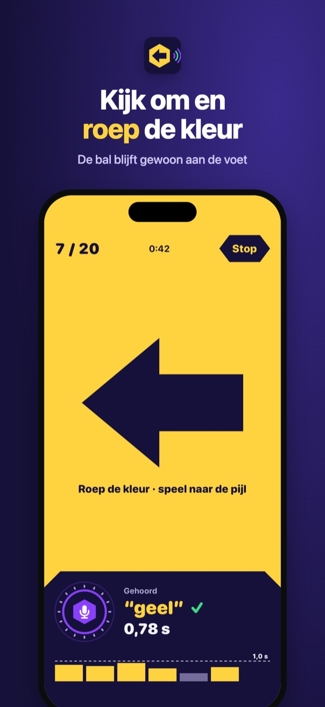
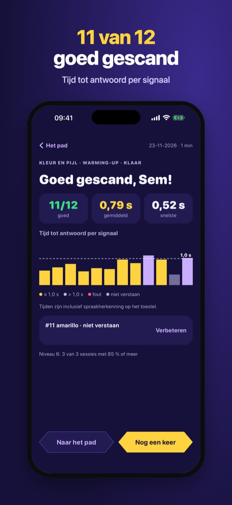
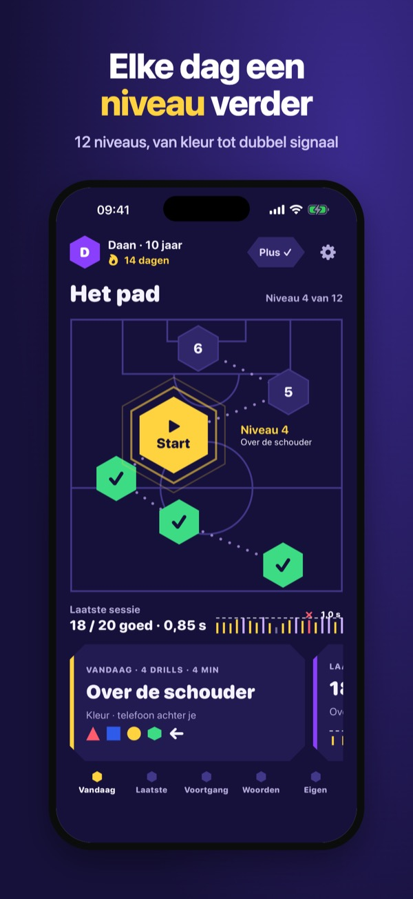
Scanfield is scantraining voor jonge voetballers, thuis of in de tuin. Zet de iPhone op een stoel, pak een bal en start een drill. Er verschijnt een kleur, pijl of getal; je kind kijkt over de schouder, roept wat het ziet en speelt de bal. Scanfield luistert op de iPhone zelf, telt goed en fout en meet de tijd tot het antwoord. Zo wordt omkijken een gewoonte, met een pad van 12 niveaus.
Zonder abonnement: niveau 1–3, 5 minuten spraak per dag en onbeperkt de tikmodus. Scanfield Plus is een maand- of jaarabonnement (met proefperiode bij het jaarabonnement): alle 12 niveaus, spraak zonder limiet, meer profielen, eigen drills en de volledige geschiedenis. Verlengt automatisch; opzeggen kan in de instellingen van je Apple ID. Geen advertenties, geen account.
Scanfield is een oefenhulp, geen medisch of sportkundig meetinstrument. De tijd tot antwoord omvat de herkenningstijd van de iPhone. Er wordt geen geluid opgenomen of bewaard. Oefen op een veilige plek, met een ouder of trainer in de buurt.
Terms of Use (EULA): https://www.apple.com/legal/internet-services/itunes/dev/stdeula/
Privacy: https://baytechbv.github.io/privacy/scanfield-eu/
Mira, dilo y juega el balón
Mira por encima del hombro, di lo que ves y juega el balón. Scanfield mide el tiempo hasta tu respuesta y crea un programa por niveles.
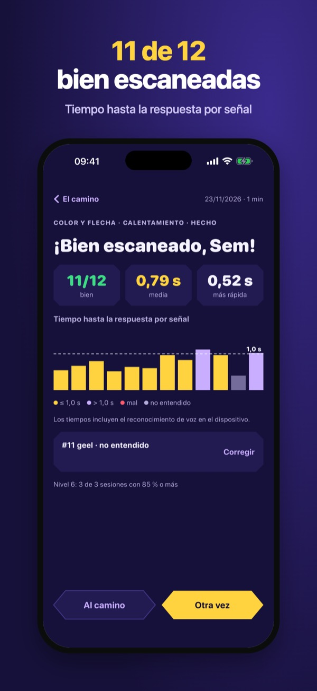
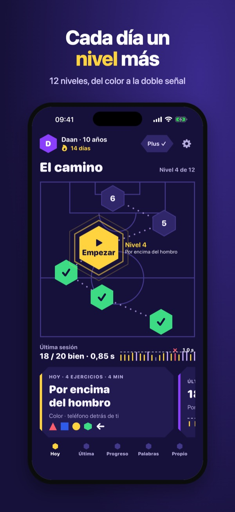
Scanfield es entrenamiento de escaneo para jóvenes futbolistas, en casa o en el jardín. Coloca el iPhone en una silla, coge un balón y empieza un ejercicio. Aparece un color, una flecha o un número; tu hijo mira por encima del hombro, dice en voz alta lo que ve y juega el balón. Scanfield escucha en el propio iPhone, cuenta aciertos y fallos y mide el tiempo hasta la respuesta. Así mirar antes de recibir se convierte en hábito, con un camino de 12 niveles.
Sin suscripción: niveles 1–3, 5 minutos de voz al día y modo táctil sin límite. Scanfield Plus es una suscripción mensual o anual (con periodo de prueba en la anual): los 12 niveles, voz sin límite, más perfiles, ejercicios propios e historial completo. Se renueva automáticamente; puedes cancelarla en los ajustes de tu Apple ID. Sin anuncios, sin cuenta.
Scanfield es una ayuda para entrenar, no un instrumento de medición médico ni deportivo. El tiempo hasta la respuesta incluye el reconocimiento del iPhone. No se graba ni se guarda audio. Entrena en un lugar seguro, con un adulto cerca.
Terms of Use (EULA): https://www.apple.com/legal/internet-services/itunes/dev/stdeula/
Privacy: https://baytechbv.github.io/privacy/scanfield-eu/
Titta, säg det och spela
Titta över axeln, säg vad du ser och spela bollen. Scanfield mäter tiden till ditt svar och bygger ett program i nivåer.
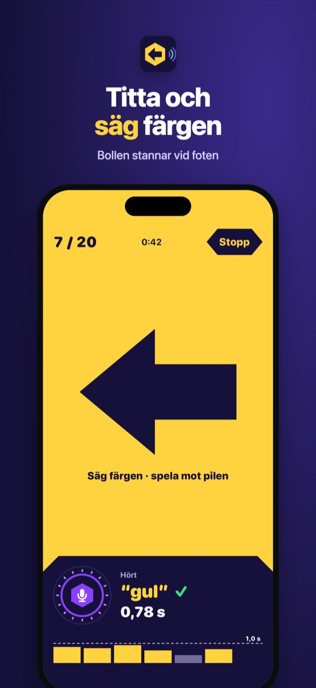
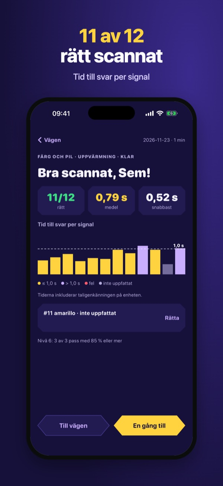
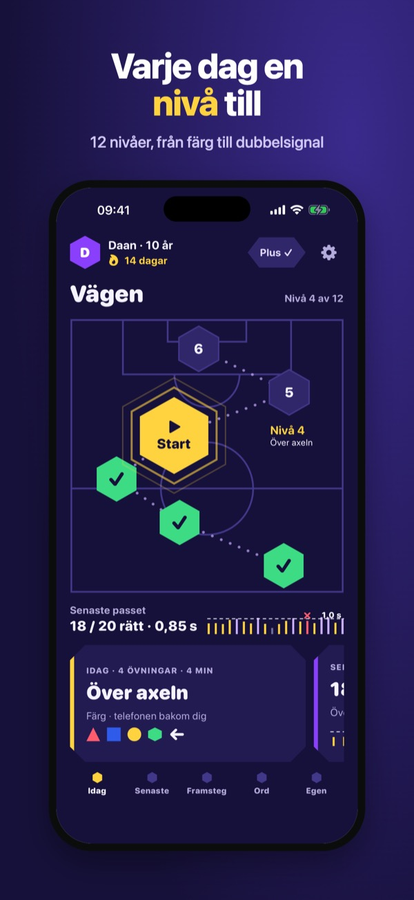
Scanfield är scanningträning för unga fotbollsspelare, hemma eller i trädgården. Ställ iPhonen på en stol, ta en boll och starta en övning. En färg, en pil eller en siffra visas; barnet tittar över axeln, säger högt vad det ser och spelar bollen. Scanfield lyssnar i själva iPhonen, räknar rätt och fel och mäter tiden till svaret. Så blir det en vana att titta upp, med en väg på 12 nivåer.
Utan prenumeration: nivå 1–3, 5 minuter röst per dag och tryckläget utan gräns. Scanfield Plus är en månads- eller årsprenumeration (med provperiod på årsprenumerationen): alla 12 nivåer, röst utan gräns, fler profiler, egna övningar och hela historiken. Förnyas automatiskt; avsluta i inställningarna för ditt Apple-ID. Inga annonser, inget konto.
Scanfield är ett träningsstöd, inget medicinskt eller idrottsvetenskapligt mätinstrument. Tiden till svar inkluderar iPhonens igenkänning. Inget ljud spelas in eller sparas. Träna på en säker plats med en vuxen i närheten.
Terms of Use (EULA): https://www.apple.com/legal/internet-services/itunes/dev/stdeula/
Privacy: https://baytechbv.github.io/privacy/scanfield-eu/
Schulterblick mit Stimme
Über die Schulter schauen, sagen was du siehst, Ball spielen. Scanfield misst die Zeit bis zur Antwort und baut ein Programm in Stufen.
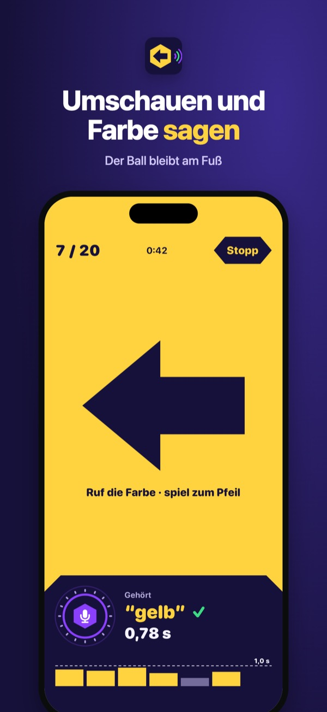
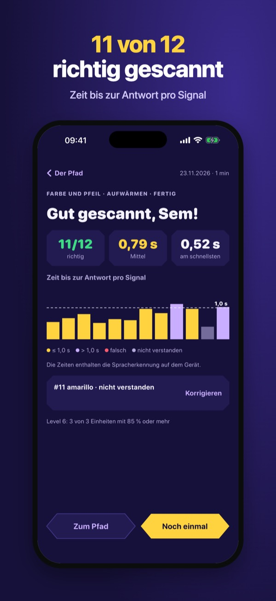
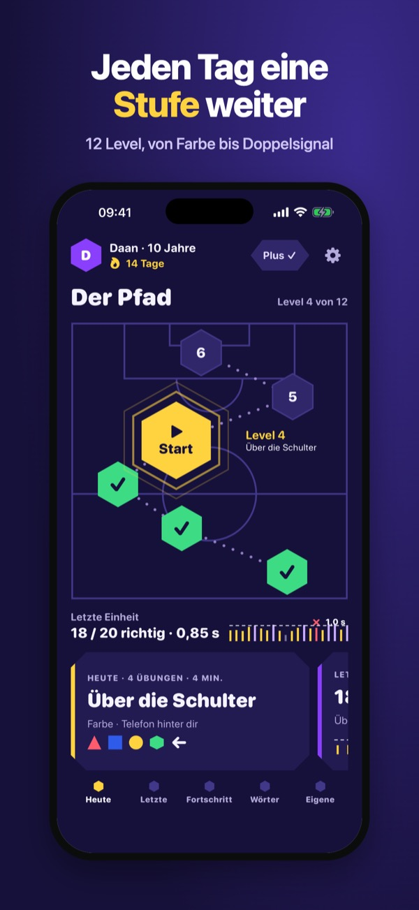
Scanfield ist Scanning-Training für junge Fußballer, zu Hause oder im Garten. iPhone auf einen Stuhl, Ball holen, Übung starten. Eine Farbe, ein Pfeil oder eine Zahl erscheint; dein Kind schaut über die Schulter, sagt laut, was es sieht, und spielt den Ball. Scanfield hört auf dem iPhone selbst zu, zählt richtig und falsch und misst die Zeit bis zur Antwort. So wird der Schulterblick zur Gewohnheit, mit einem Weg aus 12 Stufen.
Ohne Abo: Stufe 1–3, 5 Minuten Sprache pro Tag und der Tippmodus ohne Grenze. Scanfield Plus ist ein Monats- oder Jahresabo (mit Testzeitraum beim Jahresabo): alle 12 Stufen, Sprache ohne Limit, mehr Profile, eigene Übungen und der ganze Verlauf. Verlängert sich automatisch; kündbar in den Einstellungen deiner Apple-ID. Keine Werbung, kein Konto.
Scanfield ist eine Trainingshilfe, kein medizinisches oder sportwissenschaftliches Messgerät. Die Zeit bis zur Antwort enthält die Erkennungszeit des iPhone. Es wird kein Ton aufgenommen oder gespeichert. Trainiere an einem sicheren Ort, mit einem Erwachsenen in der Nähe.
Terms of Use (EULA): https://www.apple.com/legal/internet-services/itunes/dev/stdeula/
Privacy: https://baytechbv.github.io/privacy/scanfield-eu/
Patrz, mów i graj piłką
Spójrz przez ramię, powiedz, co widzisz, i zagraj piłkę. Scanfield mierzy czas do odpowiedzi i tworzy program w poziomach.
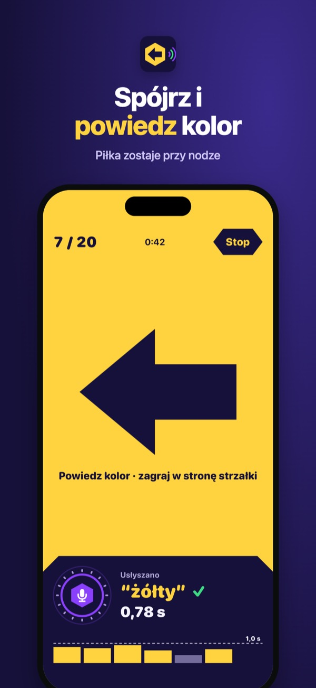
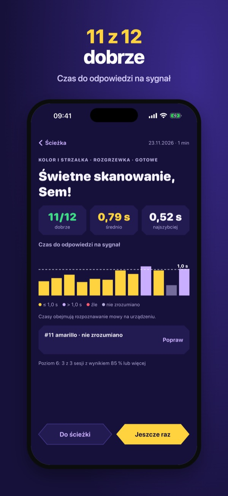
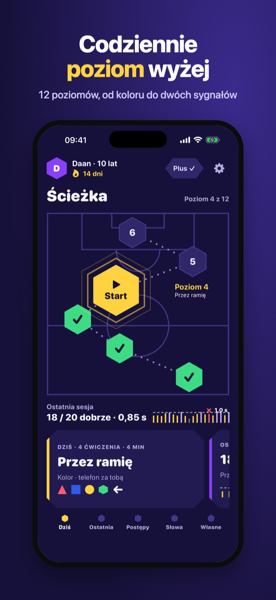
Scanfield to trening skanowania dla młodych piłkarzy, w domu lub w ogrodzie. Postaw iPhone na krześle, weź piłkę i zacznij ćwiczenie. Pojawia się kolor, strzałka lub liczba; dziecko patrzy przez ramię, mówi głośno, co widzi, i zagrywa piłkę. Scanfield słucha na samym iPhonie, liczy dobre i złe odpowiedzi i mierzy czas do odpowiedzi. Tak rozglądanie się staje się nawykiem, ze ścieżką 12 poziomów.
Bez subskrypcji: poziomy 1–3, 5 minut głosu dziennie i tryb dotykowy bez limitu. Scanfield Plus to subskrypcja miesięczna lub roczna (z okresem próbnym przy rocznej): wszystkie 12 poziomów, głos bez limitu, więcej profili, własne ćwiczenia i pełna historia. Odnawia się automatycznie; anulujesz w ustawieniach Apple ID. Bez reklam, bez konta.
Scanfield to pomoc treningowa, a nie medyczny ani sportowy przyrząd pomiarowy. Czas do odpowiedzi obejmuje rozpoznawanie przez iPhone. Dźwięk nie jest nagrywany ani zapisywany. Ćwicz w bezpiecznym miejscu, przy dorosłym.
Terms of Use (EULA): https://www.apple.com/legal/internet-services/itunes/dev/stdeula/
Privacy: https://baytechbv.github.io/privacy/scanfield-eu/
Guarda, dillo e gioca palla
Guarda oltre la spalla, di' cosa vedi e gioca la palla. Scanfield misura il tempo fino alla risposta e crea un programma a livelli.
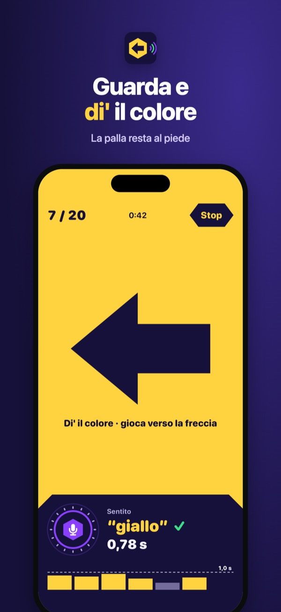
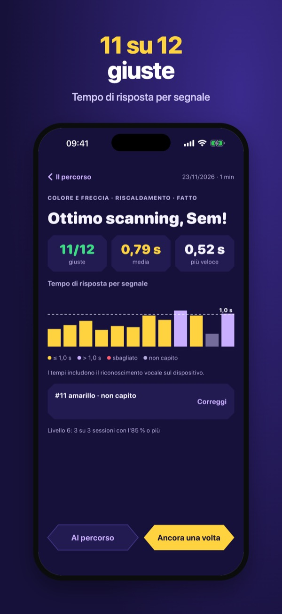
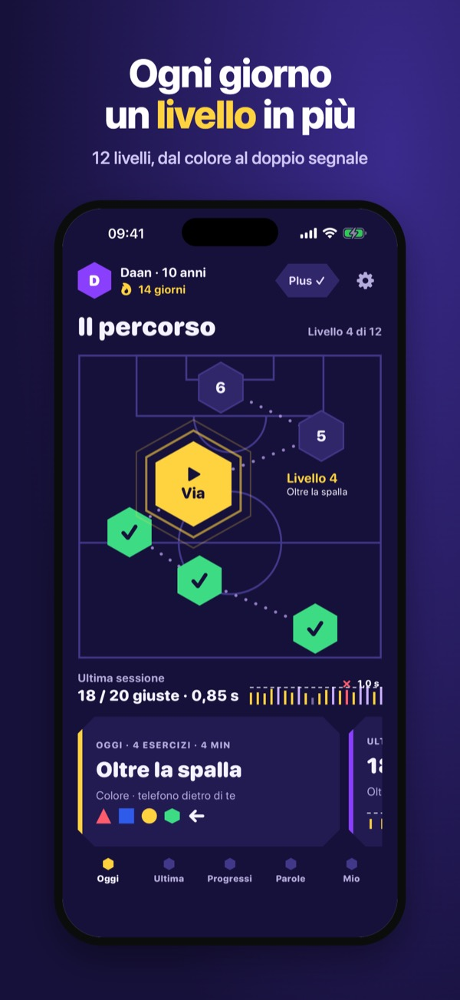
Scanfield è allenamento allo scanning per giovani calciatori, a casa o in giardino. Metti l'iPhone su una sedia, prendi un pallone e avvia un esercizio. Compare un colore, una freccia o un numero; tuo figlio guarda oltre la spalla, dice ad alta voce cosa vede e gioca la palla. Scanfield ascolta sull'iPhone stesso, conta giuste e sbagliate e misura il tempo fino alla risposta. Così guardarsi intorno diventa un'abitudine, con un percorso di 12 livelli.
Senza abbonamento: livelli 1–3, 5 minuti di voce al giorno e modalità tocco senza limiti. Scanfield Plus è un abbonamento mensile o annuale (con periodo di prova sull'annuale): tutti i 12 livelli, voce senza limiti, più profili, esercizi propri e cronologia completa. Si rinnova automaticamente; puoi disdire nelle impostazioni del tuo ID Apple. Niente pubblicità, nessun account.
Scanfield è un aiuto per allenarsi, non uno strumento di misura medico o sportivo. Il tempo fino alla risposta include il riconoscimento dell'iPhone. Nessun audio viene registrato o salvato. Allenati in un luogo sicuro, con un adulto vicino.
Terms of Use (EULA): https://www.apple.com/legal/internet-services/itunes/dev/stdeula/
Privacy: https://baytechbv.github.io/privacy/scanfield-eu/